Главная
Сообщество
Контакты
Добро пожаловать в таверну,
Ведьмак
Шевелись, Плотва
Сюжет
Дитя Предназначения
Вместе с Геральтом вам предстоит опасное и глубоко личное путешествие из всех, что было раньше. Вы должны найти Цири — приёмную дочь ведьмака и живое оружие невообразимой мощи. Она Дитя Предназначения, связанное с Геральтом узами судьбы. Самые влиятельные и опасные силы континента интересует Старшая Кровь в её жилах. Ведьмак растил, воспитывал и обучал Цири, и потому именно ему предстоит спасти её и весь мир.
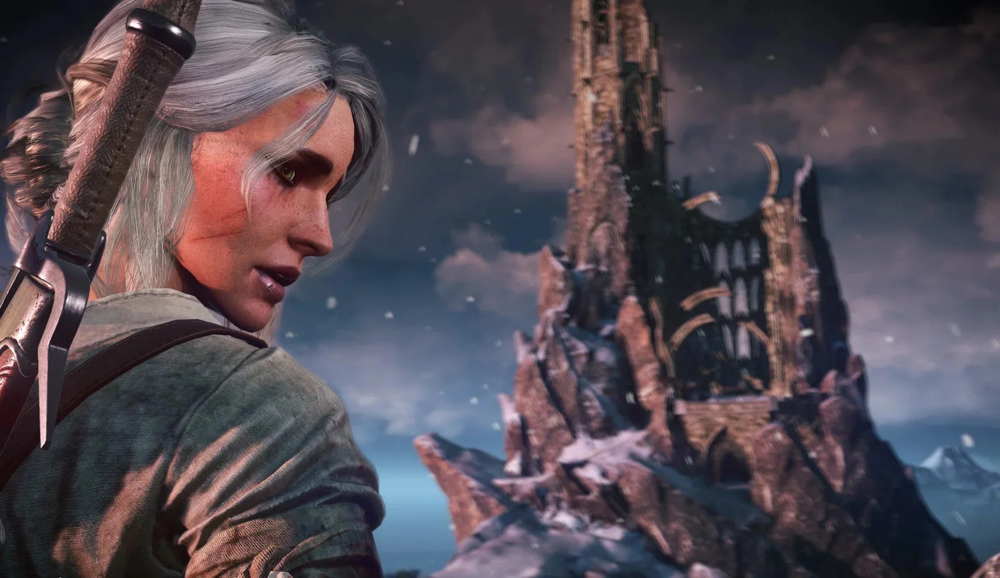
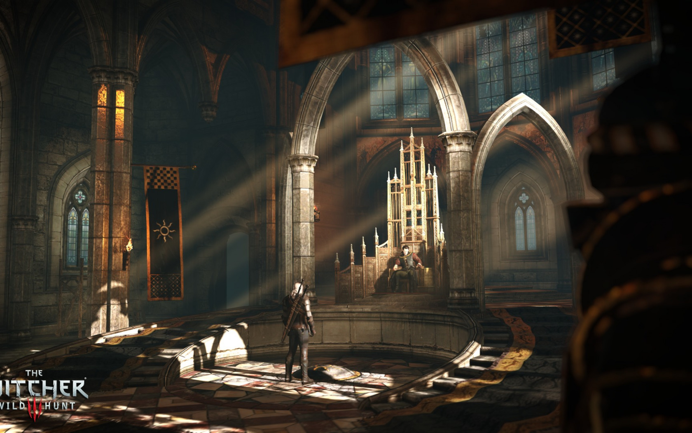
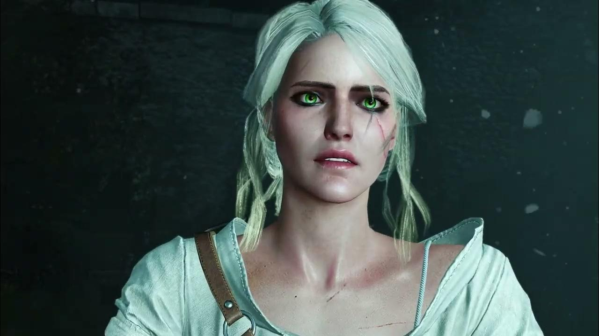
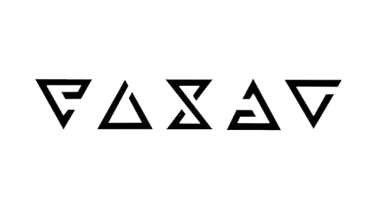
Сюжет
Радости жизни
Вместе с Геральтом вам предстоит опасное и глубоко личное путешествие из всех, что было раньше. Вы должны найти Цири — приёмную дочь ведьмака и живое оружие невообразимой мощи. Она Дитя Предназначения, связанное с Геральтом узами судьбы. Самые влиятельные и опасные силы континента интересует Старшая Кровь в её жилах. Ведьмак растил, воспитывал и обучал Цири, и потому именно ему предстоит спасти её и весь мир.
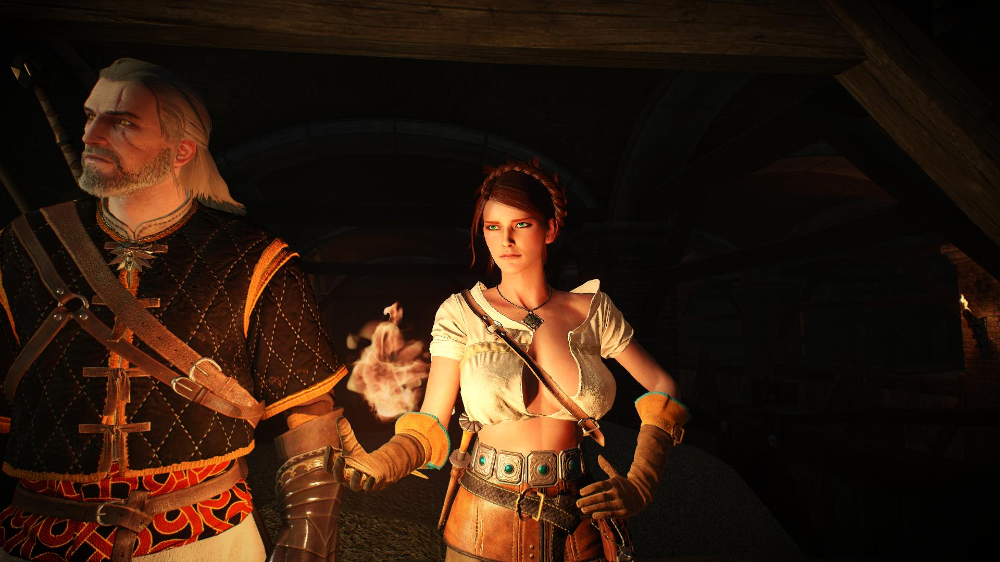
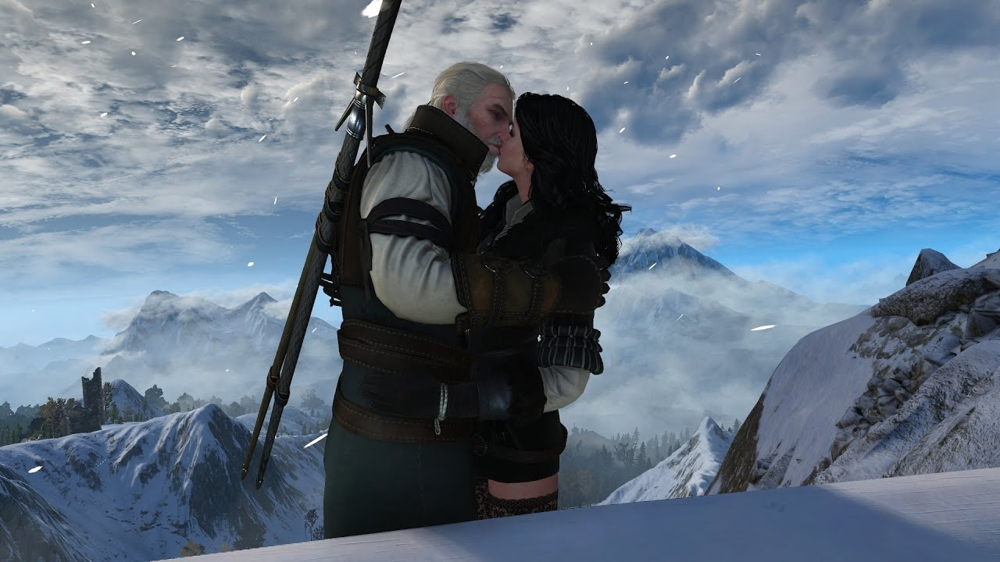
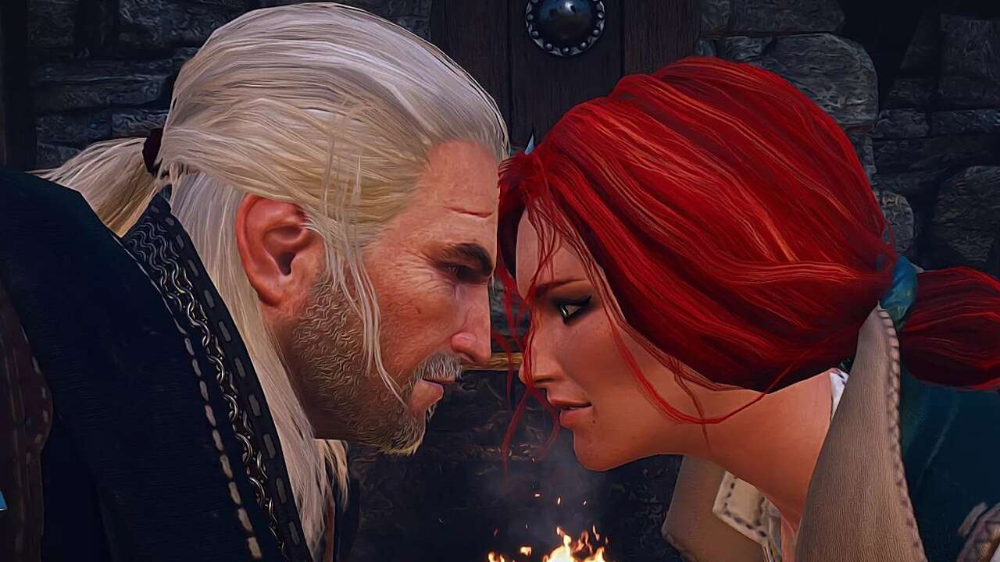
Сюжет
Проклятье Дикой Охоты
<
Дикая Охота… Появление этих призрачных всадников в ночном небе всегда сулило войны, мор и погибель. Мало кто понимает их истинную природу, но видом своим они внушают страх всему живому. Говорят, что они похищают души и заставляют их присоединиться к своей чудовищной кавалькаде. Дикая Охота всегда приходит стылой зимней ночью, и полярные огни в небесах возвещают о ней.
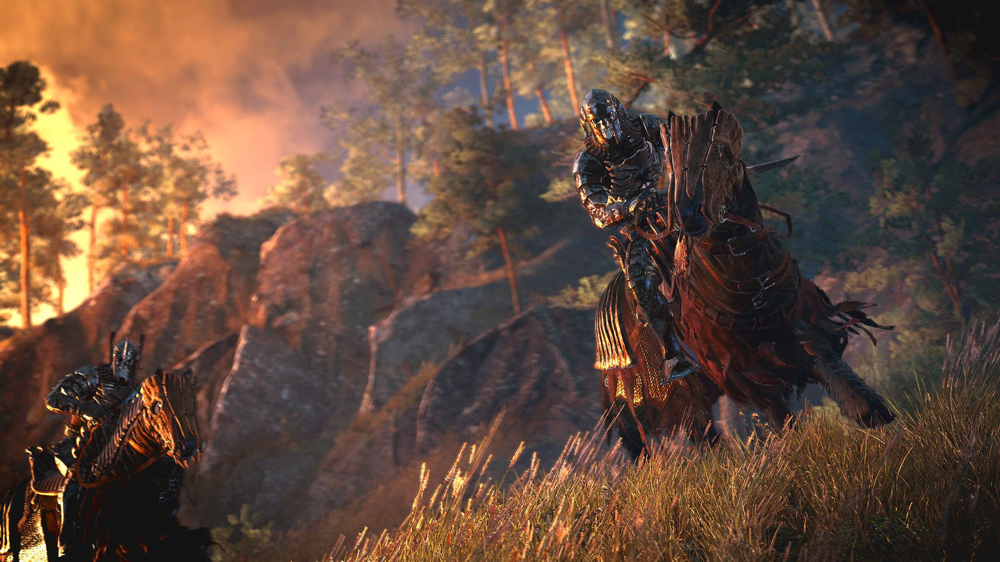
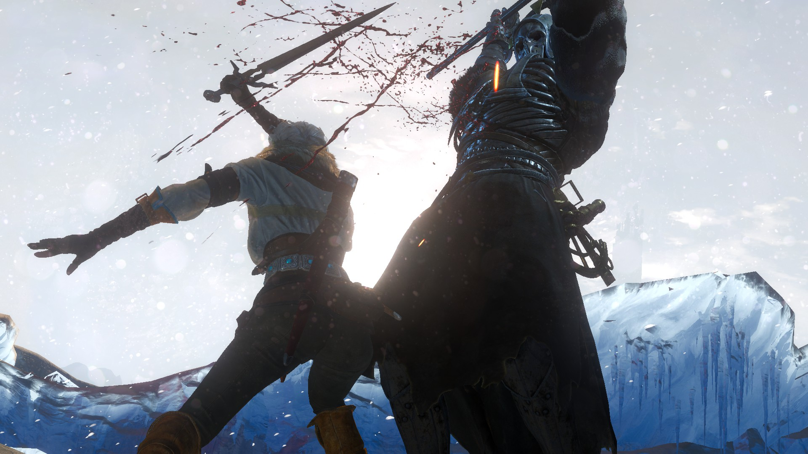
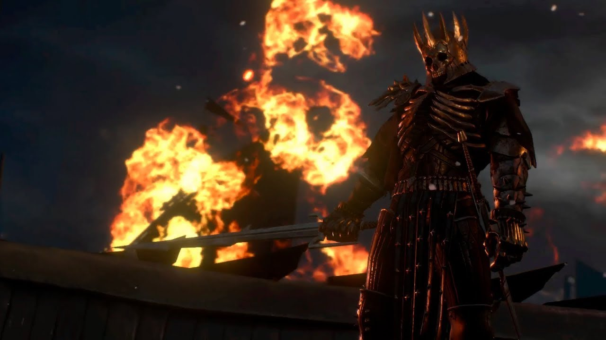
Сюжет
Выбор и его последствия
<
На пути к цели Геральт не раз окажется перед непростым выбором. Ведьмаки не любят вмешиваться в чужие дела, и всё же нередко выходит так, что от их решений зависят судьбы других. И, увы, далеко не всегда верный выбор очевиден: уж слишком много оттенков серого, и любое действие может нарушить баланс между жизнью и смертью. Финал «Дикой Охоты» зависит от того, каким путём пойдёте вы. В игре три внушительных эпилога, которые включают в себя по несколько итоговых состояний мира, так что игру будет интересно проходить снова и снова.
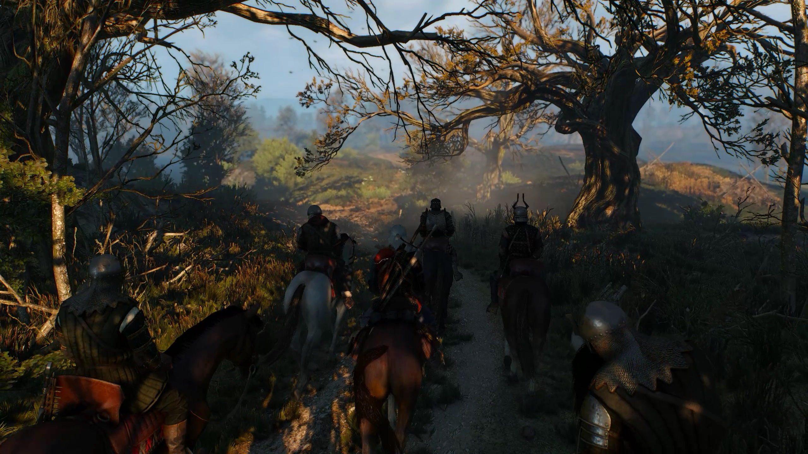
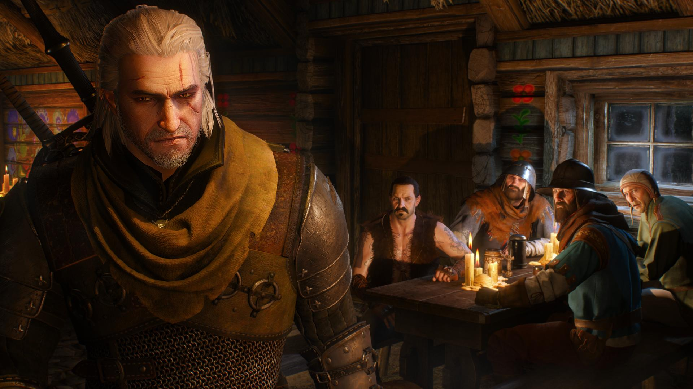
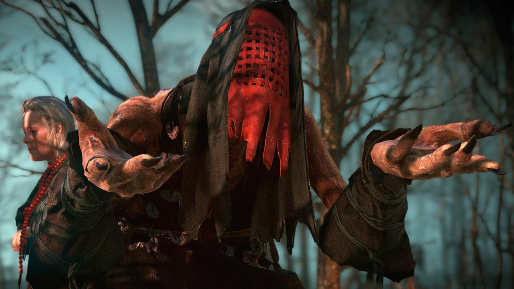